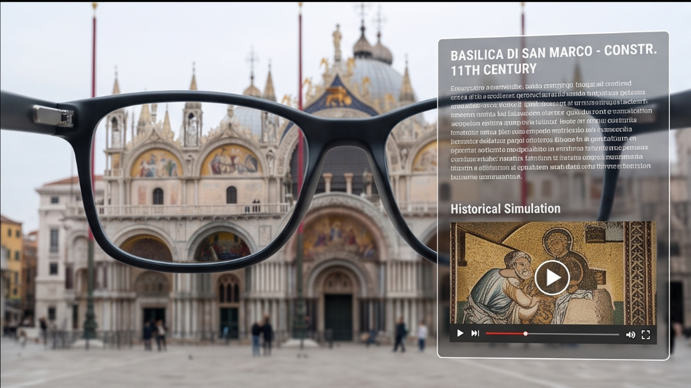

01 / 04
旅行中的好奇心
我是一個喜歡到處旅遊的上班族，體驗各地文化與人事物，是我工作之餘最享受生活的時光。
01 / 04
我是一個喜歡到處旅遊的上班族，體驗各地文化與人事物，是我工作之餘最享受生活的時光。
02 / 04
但是到了每個景點，總覺得都是在走馬看花。每次都要在出發前做很多功課、上網查資料，才會知道眼前景點或人事物的關聯。這樣不但累，也總覺得沒有效率。

03 / 04
如果可以配合 AI 眼鏡，將我看到的人、事、物，直接透過眼鏡顯示模擬場景影片與即時查詢到的說明，並即時講解，我就能立刻理解眼前的展覽、建築與景點。
04 / 04
實現這樣的功能後，我在旅行中能更完整地體驗每一段旅程。想看展覽就看展覽，想逛老街就逛老街，旅行變得輕鬆、放鬆又自在。